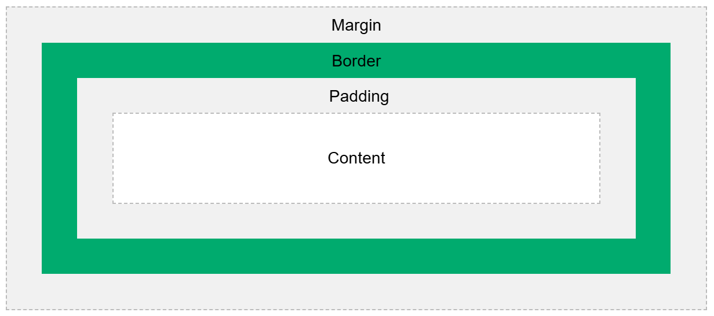

Homework 4: Exploring HTML and CSS
Welcome to my submission for Homework 4! I wanted to provide a slight PSA: I have only ever touched CSS and HTML one other time, and am therefore not very familiar with it at all. This website might not look the best. Thank you for your patience, and feel free to reach out if you have any questions or concerns!
Exploring HTML
Tags and Nesting
It turns out, you can actually make tables in HTML! I made one (below) to help me remember what some of the tags mean.
| Tag Definition | Meaning |
|---|---|
| p | paragraph |
| h | Header - the higher the number, the more important the header is (ex: h1 is more important than h4). |
| a | Hyperlink reference - a href |
| img | images |
| table | tables, like this one! |
| tr | Nested in tables, tr is the reference for a table row |
| td | Nested in table rows (tr), td is the table data within a cell. Can contain a bunch of different types of html, like images and such. |
Some additional fun facts I learned for this homework assignment, HTML elements have default display values for simplicity. They have block elements and inline elements.
Block elements will take up the most available width, starts on a new line, and there is some additional padding on the margins for the element (more info can be found at W3Schools). Inline elements do not start on a new line, and do not take up the entirety of the available width.
div VS. span
div
It turns out that the div element is used as a container for other HTML elements (W3Schools). div is a block element, but doesn't actually have any required attributes. There are some standard attributes most people use with it though, including style, class, and id. It appears that div is mostly used to group sections of a webpage together. After learning this information, I adjusted my code with div to group this section (div vs. span) together! I used DoFactory for the style reference to learn how the style tag within div works.
span
The span tag is very similar to the div element, however it's actually an inline element, so it doesn't provide extra padding/space and doesn't use the entirety of the available width. Span seems like a good use when when you want to change the color of some text inline, which is what I just learned how to do!
Creating Links and Including Images
As you can see, I have already included several hyperlinks. However, this is only my second HTML page ever so it's absolutely worth typing up some more to get used to the syntax of HTML.
Links
Here are some fun links! As an added bonus, I saw a cool looking format on W3Schools with a rule in the head tag using style!The Technology Acquisition Website!
Fun fact, if you ever want to see what you can purchase as a faculty member at GVSU with your department's funds, feel free to check out our stock options on our Technolgoy Acquisition Website!
My Current Favorite Video Game
I have been attempting to 100% Zelda: Tears of the Kingdom. It will take me several hundred hours to do, but its good to have hobbies.
My Most Recent CompSci Project
I have been working with GVSU IT Innovation and Research on a web app that generates realistic instructor content using AI called ProfAI. My project supervisor has done a few presentations about it, which can be found here.
My Most Recent CompSci Project
I have been working with GVSU IT Innovation and Research on a web app that generates realistic instructor content using AI called ProfAI. I turned in my first ever MVP for the project to Dr. Erik Fredricks for 641, and a GitPages exists for more information here.
Images
I'm sure by now you must be sick of reading all of the links. Here are some nice pictures that I have been using to practice resizing using the width and height parameters, as well as the alt parameter.
Exploring CSS
Setting Properties on an Element
So I haven't done a ton with CSS. I have really only used online templates available. I am familiar with color and font. Using W3Schools, I found out you can make headers (or really any text) all caps automatically. You'll notice that my very first header (h1 header) is in all caps. That code is in my styles.css file! I also conveniently changed the background of this site to pink.
I also learned that with CSS, my images can be put into a gallary view via W3Schools. I created a new style rule for this. However, the element was inline for gallery, not block, so the list below it was overlapping. My creating, barely working solution to this was to use what I learned earlier with styling with grid, and split it into its own grid style. It doesn't look the best, but I am glad I came up with a solution.
Using Selectors and Box Models
Types of Selecters
| Selector Type | Meaning |
|---|---|
| Simple | Selects elements based on class, name, or id. ID is unique, classes use a period followed by the class name, can do more than one class as a reference. Information found here |
| Combinator | Explains the relationship between selectors, and contains more than one simple selector. Information found here. |
| Pseudo-Class | Used to define when an element has or is in a "special state* (hovering state, focus, etc.). Syntax is a:state. Information found here. |
| Pseudo-Elements | Used for styling any specific part of an element, like a single letter or maybe the border on a picture. Notation is double colon's ::. Information found here. |
| Attributes | Similar to pseudo elements, only these apply to specific attributes of an element rather than generically a different part of an element. Defined by [attribute~='thing'] syntax. Information found here. |
Box Models
Because I am completely new to CSS, I did not know that the term ''box model'' refers to design or layout. W3Schools has this very helpful image of the box model.
The box model is basically like a giant wrapper with different parts: Margin, border, padding, and content. I am assuming there can be added attributes to it. W3Schools has some fantastic descriptions of each part (below for both the assignment, and my notes).
- Content - The content of the box, where text and images appear
- Padding - Clears an area around the content. The padding is transparent
- Border - A border that goes around the padding and content
- Margin - Clears an area outside the border. The margin is transparent
Advanced
So, because I am new to CSS, anything outside of changing the sizing, font, or color of something is advanced to me. In a previous website I had made with HTML, I really struggled with making a navigation bar, so this new webpage is a new attempt at that. Some fun facts that I learned while making a navbar:
- Navigation bars are just a list of links in HTML/CSS.
- In the list, we basically remove any padding/spacing options, and remove any bullet point markers from the list.
- My first mistake using WS's code is that it selected the element based on name, so instead of my pretty header, any lists that I had turned into sticky-top headers.
I ended up referencing my first webpage to fix my navbar bug. My first webpage was deployed using GitHub Pages, and the code can be found here.I used the navbar and .section portions to practice using different selectors, and because I knew that the padding portion worked. I am hoping that is okay.